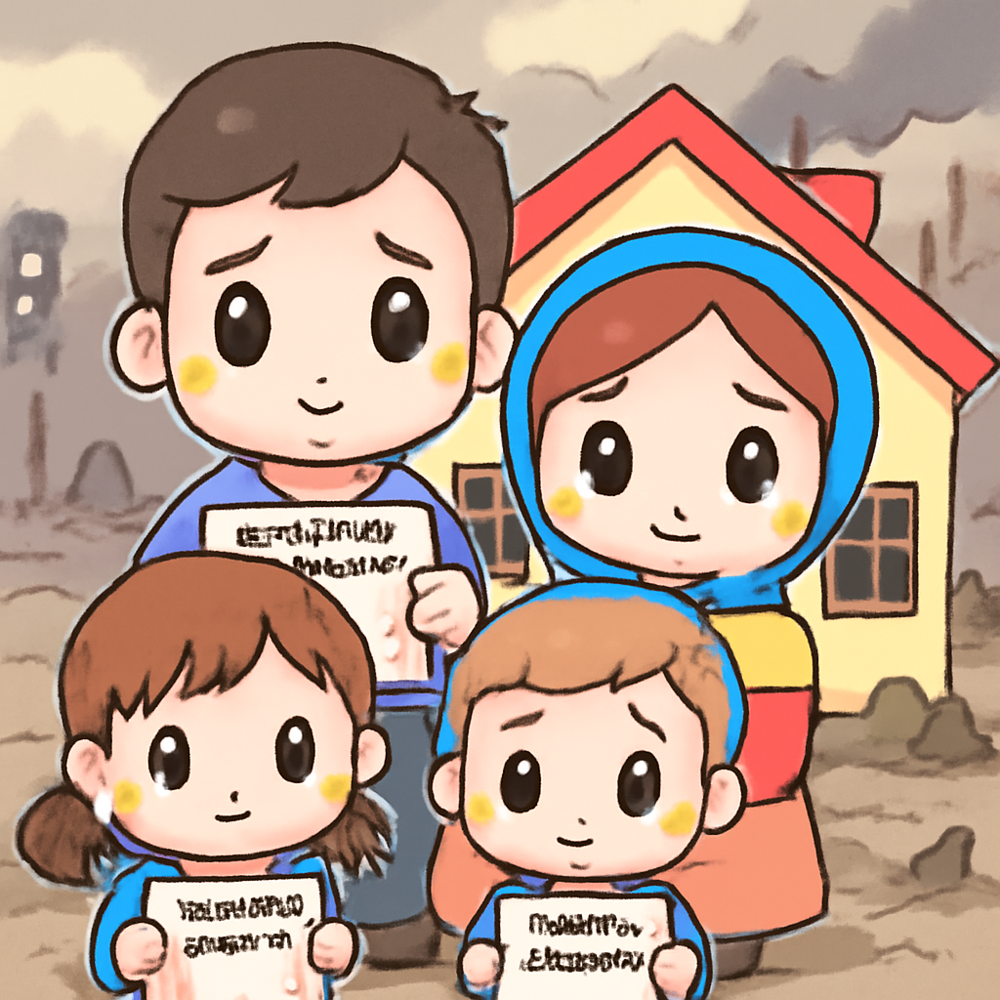

其一 · 烏克蘭基輔 · 歐盟批准 900 億歐元貸款
歐盟向烏克蘭提供巨額貸款以穩定經濟
在烏克蘭基輔，歐盟批准了一筆高達 900 億歐元的貸款，旨在幫助烏克蘭穩定經濟，尤其是在與鄰國匈牙利的石油供應問題上。這筆貸款的通過標誌著歐洲對烏克蘭的支持持續不減，也顯示出各方在能源危機期間的合作意願。哎，這可不只是擦屁股費用呀！
🔗 原始新聞 ↗
2026-04-23 · 以古觀今，以笑抗愁
歐盟向烏克蘭提供巨額貸款以穩定經濟
在烏克蘭基輔，歐盟批准了一筆高達 900 億歐元的貸款，旨在幫助烏克蘭穩定經濟，尤其是在與鄰國匈牙利的石油供應問題上。這筆貸款的通過標誌著歐洲對烏克蘭的支持持續不減，也顯示出各方在能源危機期間的合作意願。哎，這可不只是擦屁股費用呀！
🔗 原始新聞 ↗
美國海軍部長約翰·菲蘭突然離職，震驚政壇
在美國華府，海軍部長約翰·菲蘭宣布即刻辭職，這讓政壇一片嘩然。這位高級軍官的離去是近期多位軍事領導人更換中的一環，大家都在猜測背後的原因。或許是想去度假，但這種假期就有點太戲劇化了！
🔗 原始新聞 ↗
伊朗革命衛隊的行動加劇了波斯灣緊張局勢
在伊朗霍爾木茲海峽，伊朗革命衛隊宣布扣押了兩艘船，這一舉動再度引發國際關注，尤其是在美伊兩國關係緊張的背景下。這樣的行為讓人們擔心會不會導致更大的衝突。希望他們不是在舉辦海上派對！
🔗 原始新聞 ↗
黎巴嫩總理控訴以色列空襲造成平民傷亡
在黎巴嫩貝魯特，總理指責以色列空襲造成平民傷亡，並稱之為戰爭罪行。這一事件引發了國際社會的譴責和關注，讓人不禁懷念和平的日子。希望他們能在衝突中找到解決方案，而不是繼續玩火！
🔗 原始新聞 ↗
俄羅斯新法讓佔領地烏克蘭人面臨房產威脅

在俄羅斯佔領的烏克蘭地區，當地居民因新法規而感到恐慌，這些法規要求他們獲得俄國的產權證明，否則可能會失去家園。這不僅是對人權的挑戰，也讓每個人心裡打了一個大問號：究竟誰才是真正的主人？
🔗 原始新聞 ↗